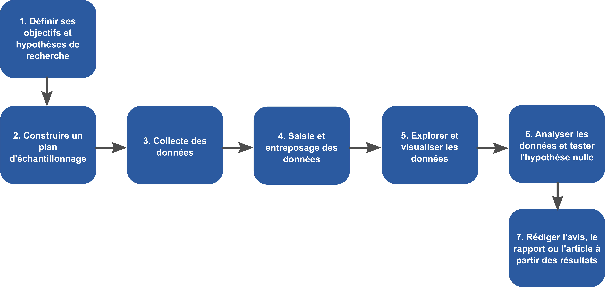
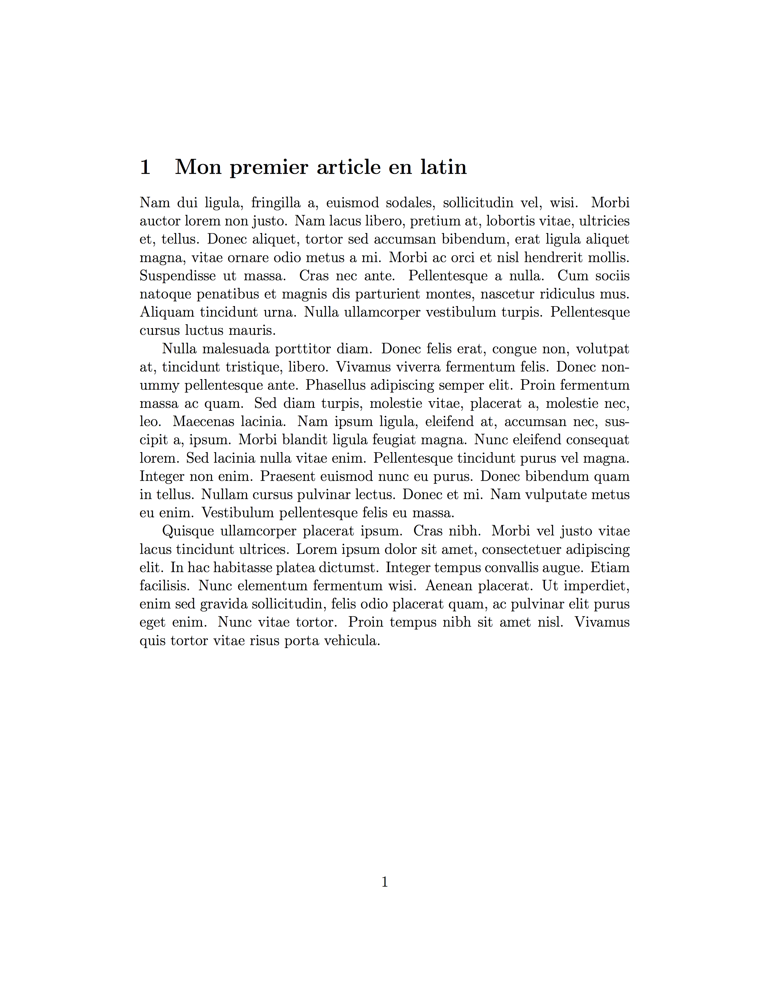
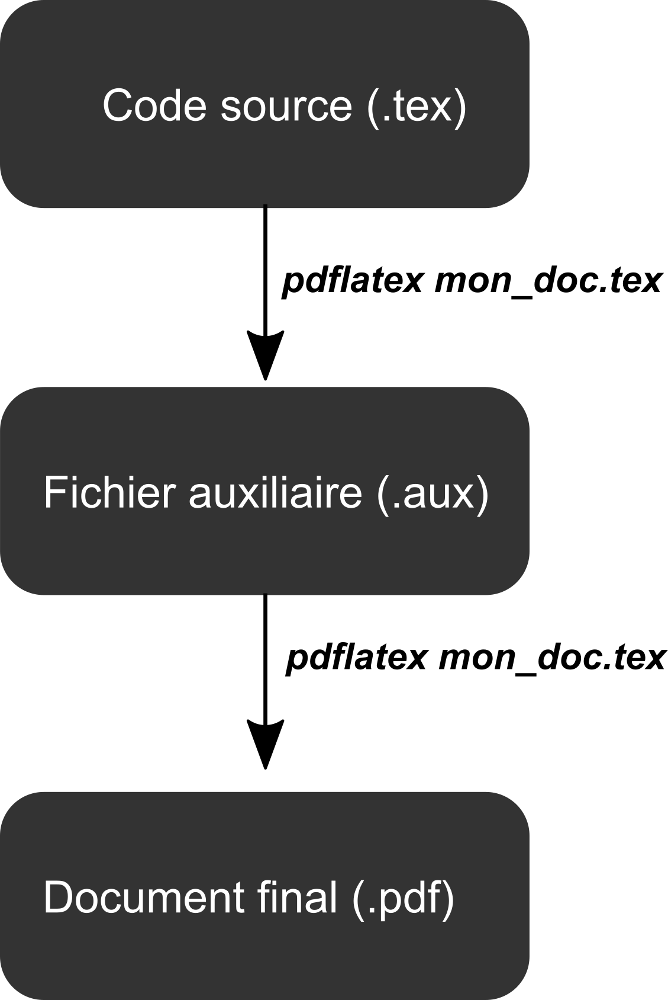

- Ces diapositives sont disponibles en version web et en PDF.
- L'ensemble du matériel de cours est disponible sur la page du portail moodle.
Séance 6: Documents dynamiques avec LaTeX
BIO 500 - Méthodes en écologie computationnelle
Dominique Gravel & Steve Vissault
Laboratoire d'écologie intégrative
Séance 6
Introduction
Où sommes-nous?

Pourquoi \(\LaTeX\)?

Word vs \(\LaTeX\)
Qu'est ce que \(\LaTeX\)?
- Language introduit en 1983 par l'informaticien Leslie Lamport.
- C'est un language à balise.
- Concu spécifiquement pour l'écriture de rapports scientifiques.
- L'utilisation de \(\LaTeX\) est une norme chez les mathématiciens et les physiciens.
La structure d'un document \(\LaTeX\)
\documentclass[12pt]{article}
\usepackage[T1]{fontenc}
\usepackage[utf8]{inputenc}
\title{Un document minimalist}
\author{Dominique Gravel}
\begin{document}
Je peux écrire du texte ici.
\end{document}
\documentclassdétermine la class du document.\usepackage: Comme R, \(\LaTeX\) permet l'utilisation de librairies.inputecetfontecsont des libraries permettant de gérer l'encoding du document (caractères avec accent etc.). Les[]déterminent les options.- On ouvre l'environnement
Documentavec\begin
Séparer le contenu du contenant
- La mise en page est gérer par des balises et environnements.
- Les balises et environnements déclarent le contenant (la forme)
- Le texte se place entre les balises (le contenu)
- Si l'on change tout simplement de balises \(\LaTeX\), on obtient une nouvelle mise en forme.
Avantages
- \(\LaTeX\) est un language gratuit et OpenSource.
- Stable et doté d'une riche communauté d'utilisateur.
- Stack Overflow entièrement dédié à \(\LaTeX\): https://tex.stackexchange.com/
- Ajustement automatique du contenant au contenu
- Mise en page automatique (Figures etc.)
- Table des matières
- Gestion des références
- Comme R, \(\LaTeX\) dispose de plusieurs libraries (packages) pour satisfaire nos besoins.
Désavantages
- La courbe d'apprentissage peut être plus rude.
- La compilation requière plusieurs étapes
- Les erreurs de compilation sont souvent difficile à comprendre.
- Son principal point faible réside dans l'absence d'un système de révision multi-utilisateurs.
Faire du \(\LaTeX\) avec Sublime Text2
- Créer un dossier sur votre bureau qui va contenir votre document \(\LaTeX\)
- Ouvrir Sublime Text2
- Sélectionner votre dossier nouvelle créer:
Fichier > Ouvrir - Créer un nouveau document:
Fichier > Nouveau - Enregistrer votre document avec l'extension
.tex:Fichier > Enregistrer sous
Et voilà, l'extension .tex détermine que le fichier est un document \(\LaTeX\).
Mon premier document \(\LaTeX\)
Mon premier document \(\LaTeX\)
\documentclass[12pt]{article}
\usepackage[T1]{fontenc}
\usepackage[utf8]{inputenc}
\usepackage{lipsum}
\begin{document}
\section{Mon premier article en latin}
\lipsum[2-4]
\end{document}
Exercice (10 minutes):
Recopier dans votre document .tex ce code.
Note: \usepackage{lipsum} est un package permettant de générer du faux texte (latin de mise en forme).
La compilation d'un document \(\LaTeX\) sans bibliographie
La compilation
Afin d'obtenir le rendu PDF de notre document, nous devons compiler ce dernier à l'aide du compilateur pdflatex.
Étape 1. Ouvrez votre terminal.
Étape 2. À l'aide de la commande
cd(Change Directory), vous devez vous déplacer dans le terminal vers le dossier que vous venez de créer:
cd ~/Bureau
cd /home/etudiant/Bureau
La compilation
- Étape 3. Nous pouvons maintenant compiler le document avec la commande:
pdflatex mon_document.tex
- Étape 4. Une fois la compilation terminé, les deux dernières lignes de la sortie devraient être:
Output written on doc.pdf (1 page, 31402 bytes).
Transcript written on doc.log.

Définir les métadonnées
\title{Comment structurer un document \LaTeX{}}
\author{Prof. Dominique Gravel\\
Chaire de recherche en Écologie Intégrative,\\
Faculté des Sciences,\\
Département de Biologie,\\
Université de Sherbrooke,\\
\texttt{dominique.gravel@usherbrooke.ca}}
\date{\today}
- On définit les métadonnées avec
\title,\author,\date. - Les métadonnées doivent être placé avant l'environnement
\begin{document}. - Les
\\dans la balise\authorpermettent une mise à la ligne. - Enfin, la balise
\todayremplie la date du jour pour nous.
Créer la page titre à partir des métadonnées
La page titre est généré grâce à la balise \maketitle dans l'environnement document.
[...]
\begin{document}
\maketitle
[...]
\end{document}
Exercice 3:
Ajouter vos métadonnées puis compiler votre document avec la page titre.

Insérer un résumé
On écrit notre résumé entre dans l'environnement abstract.
[...]
\begin{document}
\maketitle
\begin{abstract}
\lipsum[1]
\end{abstract}
\section{Mon premier article en latin}
\lipsum[2-4]
\end{document}

Ajouter des sections
[...]
\begin{document}
\section{Ma première section}
\section{Ma seconde section}
\subsection{Une sous-section de la seconde section}
\subsubsection{Une sous-section de sous-section}
\section*{Une troisième section sans numéro}
\end{document}
- Nous n'avons pas besoin d'utiliser de
\beginou\end. - Une section est par défault numéroté.
- Pour éviter cette numérotation vous pouvez ajouter une
*avant les accolades.
Insérer la table des matières
[...]
\begin{document}
\maketitle
\tableofcontent
\section{Ma première section}
\section{Ma seconde section}
\subsection{Une sous-section de la seconde section}
\subsubsection{Une sous-section de sous-section}
\section*{Une troisième section sans numéro}
\end{document}
La simple déclaration de la balise \tableofcontent permet la création d'une table des matières.
Exercice 4:
Ajouter des sections à votre document, et construisez la table des matières.
Prenez le temps de lire la sortie affichée par le compilateur pdflatex.
Le fichier auxiliaire (.aux)
Lors du dernier exercice, vous avez remarqué que la table des matières n'était pas insérer dans le document.
La première compilation scanne le document à la recherche de références internes tels que les sections.
Écriture d'un fichier
mon_document.aux:\relax \@writefile{toc}{\contentsline {section}{\numberline {1}Mon premier article en latin}{1}}La deuxième compilation assemble l'ensemble du document à partir du fichier
mon_document.auxde la première compilation.
Il faut deux compilations successives pour obtenir la table des matières dans le document pdf.
Le fichier auxiliaire (.aux)

Mise en forme du document
Mise en forme du texte
Emphase sur le texte
[...]
\begin{document}
Voici un texte
\textit{en italique},
\textbf{en gras},
\textsc{avec des petites capitales},
\textsf{avec des caractères sans empattement},
\texttt{avec des caractères à chasse fixe},
avec des mots avec {\small{un corps plus petit}}
ou {\large{plus grand}}.
\end{document}

Taille de la police de caractères
Corps très petit
\footnotesize texte très petit \normalsize, ou bien
\begin{footnotesize} texte très petit \end{footnotesize}
Corps petit
\small texte petit \normalsize, ou bien
\begin{small} texte petit \end{small}
Corps grand
\large texte grand \normalsize, ou bien
\begin{large} texte grand \end{large}
Corps très grand
\Large texte très grand \normalsize, ou bien
\begin{Large} texte très grand \end{Large}.
Alignement des paragraphes
- \textbf{...}
- \textit{...}
- \texttt{...}
- \underline{...}
- \emph{...}
Interligne
- \textbf{...}
- \textit{...}
- \texttt{...}
- \underline{...}
- \emph{...}
Séparateur entre paragraphes
- \textbf{...}
- \textit{...}
- \texttt{...}
- \underline{...}
- \emph{...}
Saut de page et saut de section
- \textbf{...}
- \textit{...}
- \texttt{...}
- \underline{...}
- \emph{...}
Référence interne au document
- URL
- Ancre de page
Personnalisation du document
\hypersetup{
backref=true, % Permet d ajouter des liens dans
pagebackref=true, % les bibliographies
hyperindex=true, % Ajoute des liens dans les index.
colorlinks=true, % Colorise les liens.
breaklinks=true, % Permet le retour à la ligne dans les liens trop longs.
urlcolor= blue, % Couleur des hyperliens.
linkcolor= blue, % Couleur des liens internes.
bookmarks=true, % Créé des signets pour Acrobat.
bookmarksopen=true, % Si les signets Acrobat sont créés,
% les afficher complètement.
pdftitle={Mon document au format TeX}, % Titre du document.
% Informations apparaissant dans
pdfauthor={PoluX}, % dans les informations du document
pdfsubject={Projet wikiBooks} % sous Acrobat.
}
Les principaux environnement \(\LaTeX\)
Ajouter une figure
Ajouter une équation
Ajouter un tableau
Ajouter un label à ces environnements
- Définir un label
- Référer la figure, l'équation à l'aide du label